==Scaling to Dynamic ?==
密集 流式 重建；显式空间指针记忆，全局坐标系下局部更新；
对乱序也比较稳。 fusion 的价值主要是控制 pointer 数量和运行时间，指标提升不明显。
CUT3R的问题主要是在固定长度的滑窗上（有限状态），Point3R能够自适应增加记忆，有选择的更新旧的以及添加新的pointer，不至于早期记忆全部丢失，也不会像 Spann3R 那样把所有的记忆都保存下来造成存储不足。
一个Pointer代表的是空间中一部分的位置以及该局部的特征，我们认为这是一个 scaffold。 3D position 来自 patch 中的所有点坐标平均，feature 来自几何与纹理特征编码。
Q1: 为什么 current frame 和 memory 的交互要 3D hierarchical position embedding？
A1: 这里的相对位置不是一维 token 序列位置，而是连续 3D 空间中的相对位置。Point3R 不只要记住以前看过什么，还想知道以前看过的东西在 3D 空间里离当前观测多远、在哪个层级。相当于在注入几何信息的时候还要注入三维位置信息，这样才能让 pointer 保持（positon + feature）的状态。
Runtime / Sequence Length / Video Depth 是 Point3R 的弱项 👇
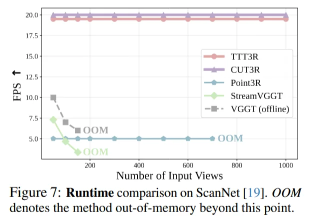
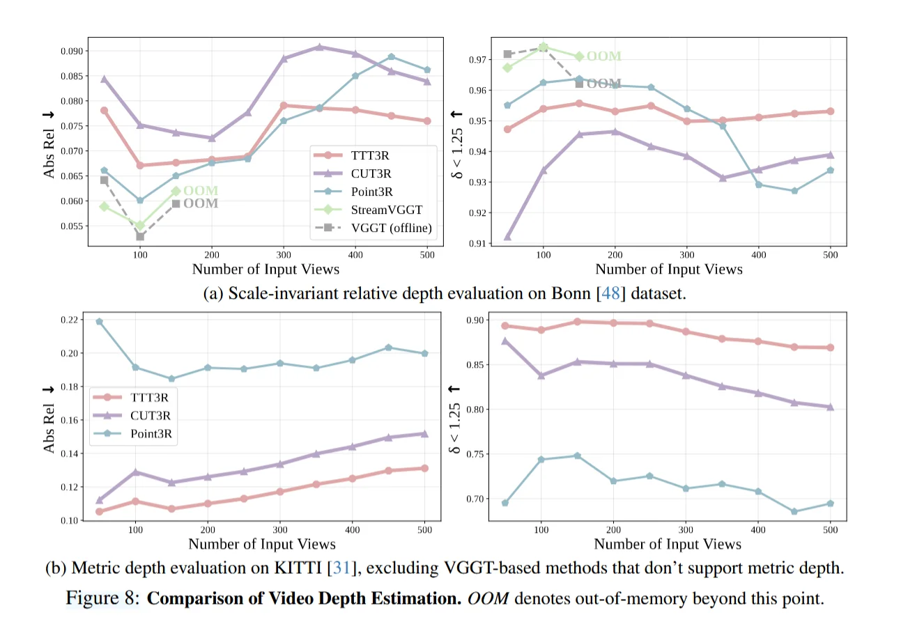
Pipeline

1. Intro & Related Works
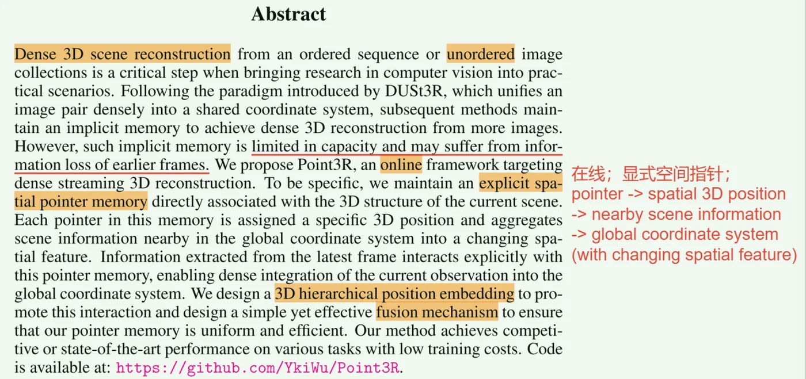
Spann3R 和 CUT3R 的方案特点以及缺陷（下图）：（以这两种为代表可以把 memory-based 方法分为两种: 一种是 token image interaction -> past frames as memory (streaming reconstruction)；一种是 all-to-all interaction -> all of other frames as memory）
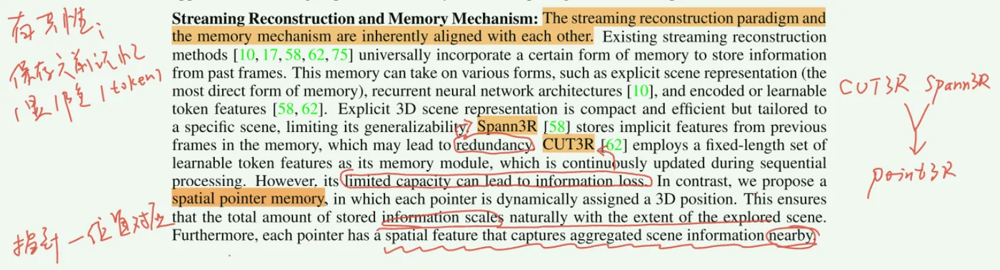
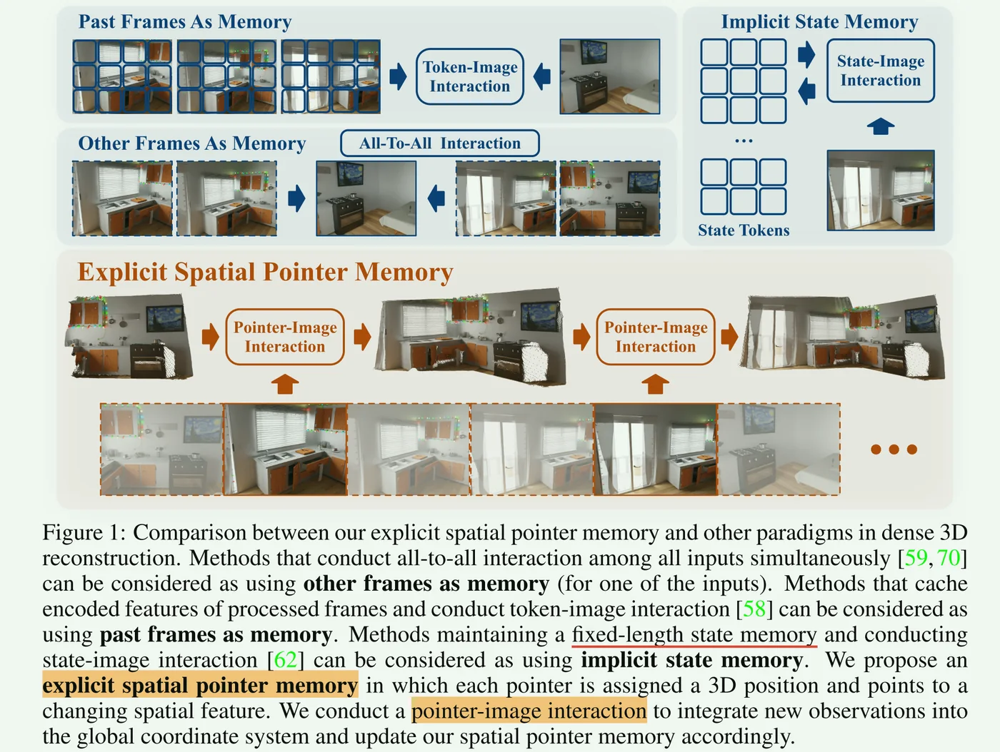
2. Method
对于 memory-based 方法来讲重要的是考虑：设计一种 可以存储之前帧的信息，并且能够很好地和输入的帧进行交互与融合 的机制。
explicit spatial pointer memory (每个指针：一个全局的3D位置+可变空间特征)；再与当前帧的图像 tokens 进行交互 -> 通过 DPT （Head） 在线输出 pointmap + pose -> 新观测的结果进入到 memory encoder 与之前 pointer-image-interaction-decoder 得到的特征一起编码 & 融合得到新指针。
输入：图像流 {I_t}
初始化：M_0=∅（第一帧用简单层将 F_0 初始化为内存特征）
for t = 1..T:
1) F_t = Encoder(I_t)
2) (F′_t, z′_t) = Decoders( (F_t, z_t), M_{t−1} ) # 指针 & 图像 & 3D位置
3) T̂_t = Head_pose(z′_t)
(X̂_self_t, C_self_t) = Head_self(F′_t)
(X̂_global_t, C_global_t) = Head_global(F′_t, z′_t)
4) 计算 L_pose, L_conf 并反传更新（Encoder/Decoders/Heads/MemoryEncoder）
5) NewPointers = MemoryEncoder(I_t, X̂_global_t, …)
M_t = Fuse(M_{t−1}, NewPointers; δ) # 指针通过阈值自适应融合2.1 Point-Image Interaction Decoders
第一帧用一个 MLP 编码得到结果来初始化记忆；
后面每一个 pointer-image interaction tokens 来自：
\[ F^`_t,z_t^` = Decoders((F_t,z_t),M_{t-1}) \]
可学习的 pose token \(z_t\) 是连接 local 和 global 的工具。
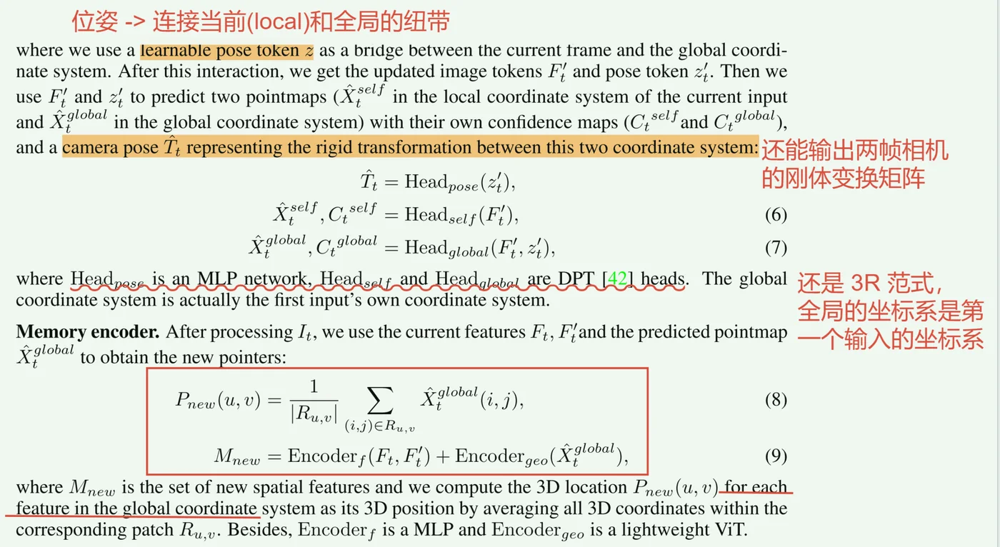
Memory Fusion：对每一个新指针寻找旧记忆中的最近邻；然后通过阈值自适应融合（dis > or < \(\delta\)）；2.2 3D hierarchical position embedding (3D HPE)
基于 RoPE（旋转位置编码）把一维 token 下标 n 扩展为三维连续位置 \(p_n=(p^x_n,p^y_n,p^z_n)\)，-> 构造三轴分量的复数旋转矩阵并施加到 \(q_k\) 上，得到含有相对3D位置的注意力（下公式），并用多频分层平均（层数h）适配不同尺度。
\[ R(n,3t)=e^{i\theta_t p^x_n},\quad R(n,3t+1)=e^{i\theta_t p^y_n},\quad R(n,3t+2)=e^{i\theta_t p^z_n}, \]
让注意力的相对位置信息直接与真实3D坐标耦合，使 pointer-image 匹配更稳定.
2.3 Training strategy
8 H100 NVIDIA GPUs / 7 days
memory encoder is composed of a light-weight ViT (6 blocks) and a 2-layer MLP.
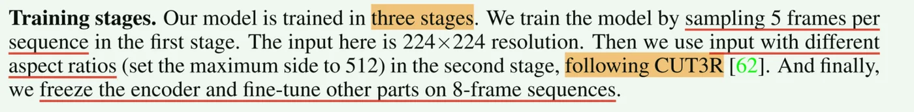
3. Experiments
3D Reconstruction & MDE
Point3R achieves state-of-the-art reconstruction performance with sparse inputs from the 7-scenes and NRGBD datasets. ==更稀疏/更无序，反而更有竞争力。==
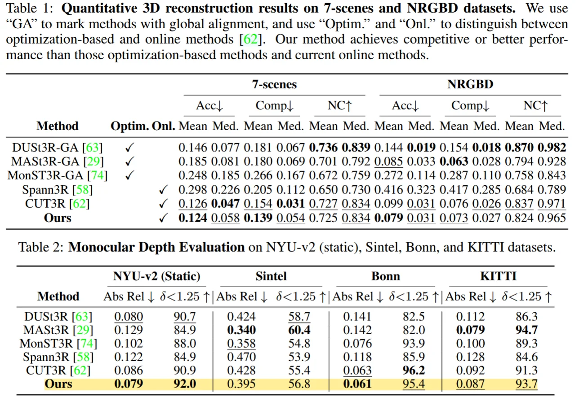
Video Depth Evaluation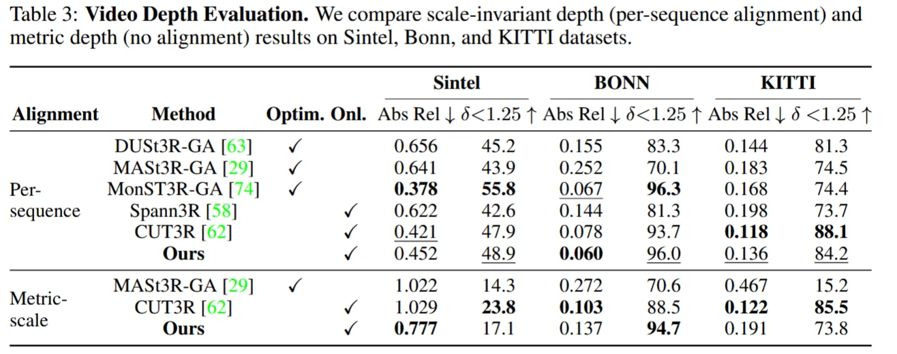
Camera Pose Estimation显式 spatial pointer memory 并没有自然转化为更强的 pose tracking 能力。Point3R 在 pose 上与现有 online 方法相比不占优，而且和 optimization-based baselines 有明显的差距。
为什么 spatial pointer memory 这样基于 3D 位置的表示却不能优化 pose 估计？后期是应该 pose 单独增强还是让 memory 加强对 pose 的约束？
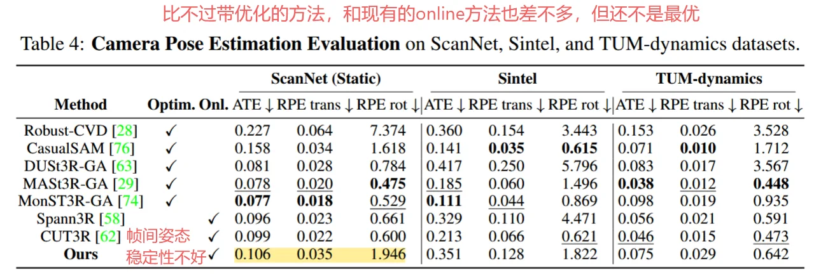
3D hierarchical position embedding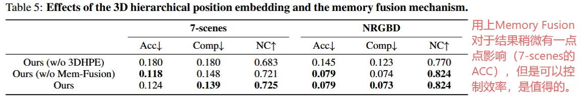
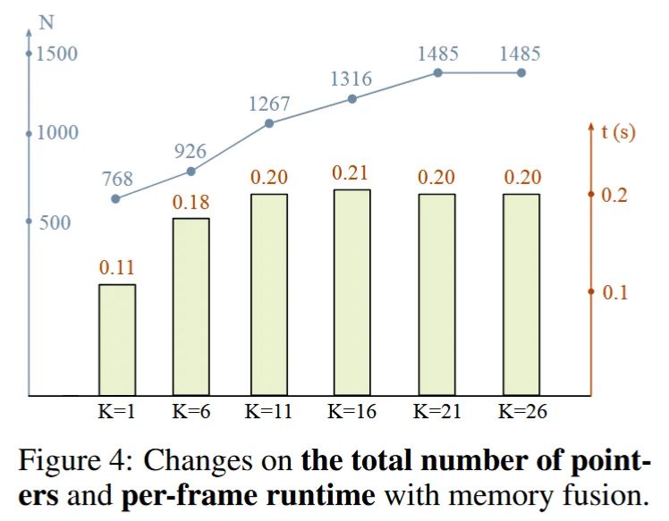
4. Conclusion & Discussions
contributions
- online, streaming, 3DR;
- explicit spatial memory pointer (each pointer with a 3D position and nearby information)
- 3D HPE + Simple memory fusion -> less constraints for input -> static / dynamic; ordered / unordered;
limitations and improvement
显式记忆 -> 固化早期误差 -> 指针回收/校正。 区域扩大 -> pointer 存储的位置变多 -> 干扰 pose 估计 -> 改进 pointer 与图像交互 -> 改成局部可见交互，这样就不会收到全局memory的干扰了